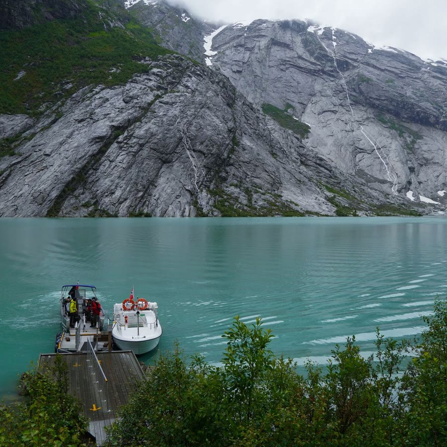

Advanced · Shaders & Audio
Experimental — not in the shipped bundle
The five things CSS could not do.
src/advanced/ is a WebGL2 and Web-Audio tier that sits outside the catalog:
one shared canvas driving five fragment programs, and an audio driver that turns a
playing track into four CSS custom properties anything downstream can read. It is
unexported, unbuilt and unshipped — this page is the first time it has
run anywhere but a test fixture.
Nothing here is auto-registered
Every other page in this showcase needs one script tag and no JavaScript of its own.
This one needs two and a registration call, because registerAdvanced is
opt-in by design — a page that never asks for it pays nothing, and core's
zero-dependency, CSS-first claims stay true whether or not this tier ever ships.
Registration has to happen before .start(). The animator resolves
every data-kui name against the registry as it processes the document, so a
primitive registered afterwards is a primitive the page has already failed to find.
import { kuinetic } from 'kuinetic'
import { registerAdvanced } from 'kuinetic/advanced' // shaders, scene, camera, particles, cursor, audio
const k = kuinetic({ observe: true })
registerAdvanced(k) // before start(), not after
k.start()
One module graph, not two script tags.
registerAdvanced checks its argument with
instanceof Registry. That is class identity, not shape — so if core and
this tier arrive as two separately-bundled scripts, each carrying its own inlined copy
of that class, the check compares two different class objects and throws
requires a Registry or Animator instance on an animator that is perfectly
valid. The import form above is fine, because a subpath of the same package resolves to
the same instance. This page therefore loads a single hand-built bundle with both
halves in it, which is the same thing
test/browser/fixtures/advanced-webgl-entry.ts does, for the same reason.
One primitive, five programs
shaders is a single primitive with a mode: keyword, and the
five modes are the five fragment programs in glsl.ts. Each one also has a
preset name — shader-displace, fluid-pointer,
liquid-distort, particle-field, image-morph — so
the common case needs no parameters at all.
The source has to be a raster the page already has: an <img>,
<video> or <canvas>. There is no live-DOM capture,
which is the scope cut that keeps the renderer small.
displace & liquid — the two that bend the image
strength is the only amplitude knob, and it goes to 10 — both of these sit
at 0.45 because water already carries the distortion, and past roughly 0.6 the
displacement pushes the sample point off the edge of the texture and you get a smeared
border instead of refraction. chromatic splits the channels on the way,
which is what the faint colour fringe on the left edge is.

fluid & particles — the two that follow the pointer
fluid has an ambient flow of its own and adds a push where the cursor goes;
particles masks the image into a dot grid and sparkles it. Both need a
pointer to show their second half — on a touch screen you get the ambient half only,
which is a real limit of the effect and not a bug in this page.
morph — the one that needs two images
to: takes a CSS selector, not a URL: the second texture is
another <img> already on the page, matched with
querySelector. With nothing driving progress, the crossfade
sits wherever strength puts it — so strength:0.5 below is a
still, half-morphed frame. Scroll drives it properly in the next section.
The two textures
B is a visible 96px thumbnail rather than a hidden node on purpose. The module only
accepts an <img> that has finished loading, and the texture is
uploaded at the file's intrinsic size — so the thumbnail feeds the shader the full
900px source while still showing a reader both ends of the morph.
Scroll drives the shader, through one custom property
There is no shader-specific scroll plumbing. scroll-progress is the same
core primitive the progress bars on every other page use, and all it does is write
--kui-progress. The renderer reads that property back — off the element's
own inline style first, then off the computed style, so a driver on an
ancestor reaches down by plain CSS inheritance.
Below, the driver is on the tall track and the shader is on the sticky image inside it, which is the ancestor case. Scrub the page and the morph runs A→B.
Both primitives on one element
The same comma grammar any two primitives share. Here scroll-progress
writes --kui-progress as an inline style on the element the shader is also
on, so the renderer finds it on the first of its two lookups. For the four continuous
modes progress is not a position in a timeline — it scales the amplitude —
so this reads as the distortion fading up as the image crosses the viewport.
Audio is a driver, not an effect
audio-source renders nothing. It runs an AnalyserNode over a
playing media element and writes four bands —
--kui-audio-bass, -mid, -treble,
-level — onto its host every frame. They are ordinary unregistered custom
properties, so they inherit, and anything below can read one: two primitives in this
tier do, and so do the four bars under the button.
A browser will not start an AudioContext without a real click,
so this section cannot start itself and does not try. The driver is declared
on:click on the block below —
data-kui="audio-source media:#kui-audio-track on:click" — so your press on
the button both starts the track and activates the analyser inside the same trusted
gesture. media: names the element explicitly, so the analyser cannot latch
onto some other media element elsewhere on the page.
A separate, explicit opt-in. Nothing on this page touches
getUserMedia until you press this, and your browser will ask again before
it hands anything over. audio-source source:mic is the same driver reading
a live stream instead of a file.
What this is not
Every item below is a real, current limit, not a caveat added for modesty. Most of them are consequences of the one design decision that makes this tier cheap: a single fixed canvas shared by every instance on the page.
-
liquidandfluidare not fluid simulationBoth are noise-driven UV offsets sampled from one still image. Nothing is advected, nothing conserves mass, and there is no solver. They look like moving water because water was photographed, not because water is being computed.
-
The shader paints over the element, at
z-index: 9999One fixed full-viewport canvas, scissored to each element's rect. Stacking order is the limit a single canvas cannot reproduce: anything that should sit above a shader element — the header pill on this page, an open modal — is painted under the replica while they overlap.
-
There is no amount knob on the audio response
A band is a gain of 1 to 2 on the amplitude a program already had — silence is exactly 1.0, a full band is double, and nothing in between is adjustable.
camera-scene's push is a fixed tenth of itsdepth. A subtler or stronger response is a parameter this code does not have. -
Only two consumers read audio
shadersandcamera-scene. Nothing in the main catalog reads a band, because presets that depended on a driver which does not ship would be dead weight in the shipped CSS. -
Reduced motion turns all of it off
Every
preparehere returns an inert instance underprefers-reduced-motion, so you get the plain image and the plain layers. A 1 ms GPU loop is not a reduction for someone on constrained hardware, so these declarereducedMotion: 'disable'rather than shortening. -
A cross-origin track feeds silence
createMediaElementSourceon a tainted media element hands the analyser zeroes with no error. The loop on this page is same-origin for that reason, and it is a browser rule the driver cannot work around. -
No per-instance frame budget
Every instance draws inside one shared
requestAnimationFrameloop. Draw errors are isolated — one instance throwing does not stop the others — but a merely slow instance has no circuit breaker and costs the whole page its frame. -
Unexported, unbuilt, unshipped
src/advanced/is not insrc/index.ts, not inpackage.json's exports map and not indist/. The bundle this page loads was built by hand. Treat all of it as a description of what the code does today, not a commitment about what ships.